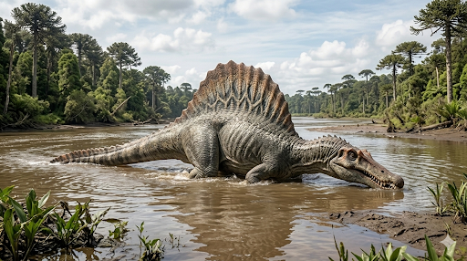

ספינוזאורוס
The Spine Lizard: Spinosaurus aegyptiacus

תיק מחקר: נתונים אבולוציוניים משולבים
תקופת פעילות
לפני כ-112 עד 93.5 מיליון שנה
תור הקרטיקון (גיל האלביאני עד הקנומני). סביבת החיים הייתה מערכת נהרות וביצות עצומה.
מסה ומשקל
7 עד 9 טונות
בניגוד לתרופודים אחרים, עצמותיו היו חסרות חללי אוויר (דחוסות מאוד) כדי לשמש כמשקולות צלילה בתוך המים.
ממדים (אורך)
14 עד 15 מטרים
הטורף היבשתי הגדול והארוך ביותר הידוע למדע אי פעם, גדול יותר מהטירנוזאורוס והגיגאנוטוזאורוס.
מיקום גיאוגרפי
צפון אפריקה (מצרים ומרוקו)
נמצא בעיקר בתצורת בחריה (Bahariya) במצרים ובשכבות קם-קם (Kem Kem beds) במרוקו – אזורים שהיו בעבר נהרות טרופיים שורצי דגי ענק.
סיווג טקסונומי קריטי
דינוזאור תרופוד (Spinosauridae)
דינוזאור ה"צייד-דייג" (Piscivore). משפחת הספינוזאוריים פיתחה התאמות מדהימות לחיים חצי-מימיים, עם גולגולת צרה דמוית-תנין, ומפרש עצום על הגב.
01 // ניתוח אטימולוגי נרחב
| החלק בשם | שפת מקור | פירוש ומשמעות היסטורית |
|---|---|---|
| Spino- | לטינית (spina) | קוץ / שדרה (Spine/Thorn) השם הוענק ב-1915 על ידי הפלאונטולוג הגרמני ארנסט שטרומר (Ernst Stromer). מתייחס ל"קוצי העצם" (Neural spines) הענקיים שצמחו מחוליות גבו ויצרו יחד מבנה של מפרש או דבשת. |
| -saurus | יוונית עתיקה (σαῦρος / sauros) | לטאה הסיומת הסטנדרטית לדינוזאורים. הלחם השם המלא: **"לטאת השדרה/המפרש"**. |
| aegyptiacus | לטינית של מיקום גיאוגרפי | ממצרים (Egyptian) מציין את מקום הגילוי של ה"הולוטייפ" (הדוגמה הראשונה המקורית) – נאת המדבר בחריה במערב מצרים. |
02 // תולדות הגילוי: פאזל חוצה יבשות ועשורים
המשלחת של שטרומר (1912) וטרגדיית המלחמה
ב-1912 הפלאונטולוג **ארנסט שטרומר** חשף במצרים עצמות מוזרות: לסת תחתונה ארוכה ועצמות גב עצומות בצורת קוצים. הוא הבין שזהו טורף לא מוכר וקרא לו ספינוזאורוס. העצמות הוצגו במינכן, גרמניה. עם פרוץ מלחמת העולם השנייה, שטרומר התחנן להעבירן לבונקר, אך מנהל המוזיאון הנאצי סירב. ב-1944 הופצץ המוזיאון והעצמות נשרפו לאפר. נותרו רק השרטוטים והתמונות.
האם מצאו מאובן שלם שלו? המהפכה של 2014
התשובה היא **לא. מעולם לא נמצא שלד שלם ב-100% של ספינוזאורוס.** השלד של שטרומר היה חלקי מאוד. פריצת הדרך הגיעה ב-2014 כשהפלאונטולוג ד"ר ניזאר איברהים מצא שלד חדש (ניאוטיפ) במרוקו, שסיפק תמונה מפורטת יותר וכלל את הרגליים האחוריות והאגן. ב-2020 נמצאו חלקים מהזנב. למרות זאת, גם השלד הזה מכיל רק כ-40% עד 60% מהחיה. המודלים המוזיאליים שאתה רואה כיום הם למעשה שילוב של פרטים שונים במרוקו יחד עם השלמות מהדמיות של קרובי משפחתו.
אקולוגיה וביומכניקה: חיים בתוך הנהר
מערכת קם-קם הייתה מלאה בטורפים אדירים. התשובה של הספינוזאורוס הייתה לפנות למים.
חידת הגולגולת: טורף באורך 1.75 מטרים
**האם נמצאה גולגולת שלמה? לא.** בדומה לשלד כולו, גם הגולגולת מעולם לא נמצאה בשלמותה. אולם, בשנת 2005 הפלאונטולוג כריסטיאנו דאל סאסו חקר חרטום (Snout) מדהים שהתגלה במרוקו והגיע לאורך של 98 סנטימטרים לבדו!
על סמך ממצא זה וקרובי משפחה, החוקרים חישבו שהגולגולת המלאה הגיעה לאורך מפלצתי של בין **1.5 ל-1.75 מטרים** – גדולה יותר משל טי-רקס. הגולגולת הייתה צרה, מוארכת ודמוית-תנין, עם שיניים חרוטיות לשיפוד דגי ענק חלקלקים (כמו דג-המסור Onchopristis). על חוטמו נמצאו שקעים שהכילו חיישני לחץ, לאיתור טרף במים עכורים.
המידות המדויקות של המפרש העצום
המפרש שעל גבו של הספינוזאורוס לא היה רק בליטה קטנה. הוא נתמך על ידי "קוצי שדרה" (Neural spines) עצומים. לפי הרישומים המדויקים שהותיר ארנסט שטרומר מהשלד המקורי, **קוץ השדרה הארוך ביותר (שסומן כ"Spine i") נמדד באורך של 1.65 מטרים בדיוק!**
עם תוספת השרירים והעור, המפרש הזה התנשא ליותר מ-1.7 מטרים מעל גב החיה (גובה של אדם בוגר). מטרתו שנויה במחלוקת: מויסות חום לתצוגת חיזור בולטת מעל פני המים, ועד לתיאוריית מיעוט שזו הייתה "דבשת" שומן.
**מנוע הנהר (תגלית 2020):** בנוסף, בשנת 2020 גילו שרידי זנב שהוכיחו שלספינוזאורוס היה זנב גמיש בצורת סנפיר/משוט (Paddle-like tail). זה סיפק את החותמת הסופית לכך שהיה שחיין פעיל שהשתמש בזנבו להנעה במים העמוקים.